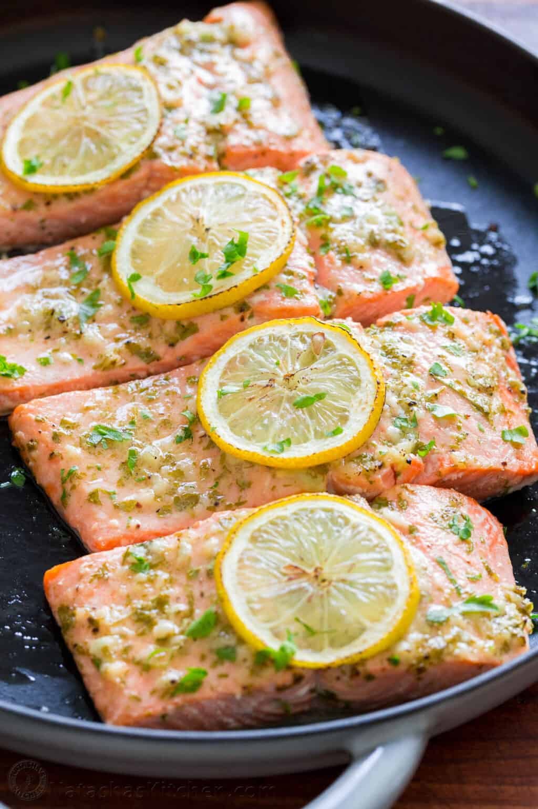

Baked Salmon
Description

Ingredients
- 1 1/2 lb salmon fillet, cut into 4 filets
- 2 Tbsp fresh parsley, finely chopped
- 2 Tbsp extra light olive oil, or vegetable oil
- 2 Tbsp fresh lemon juice
- 3 garlic cloves, minced, pressed, or grated
- 1/2 Tbsp Dijon mustard
- 1/2 tsp fine sea salt
- 1/8 tsp black pepper, freshly cracked
- 1/2 lemon, sliced into 4 rings for garnish
Steps
- Preheat oven to 450°F and line a rimmed baking sheet with a silicone liner, parchment, or foil. Arrange salmon fillets on the prepared baking sheet, skin-side-down.
- In a small bowl, add the marinade ingredients: parsley, garlic, oil, lemon juice, Dijon mustard, salt and pepper. Stir to combine.
- Generously spread the marinade, brushing over the top and sides of the salmon then top each piece with a slice of lemon.*
- Bake uncovered at 450°F for 12-15 min or until just cooked through, flaky, and the salmon reaches an internal temperature of 145˚F at the thickest portion on an instant-read thermometer. Do not over-cook.